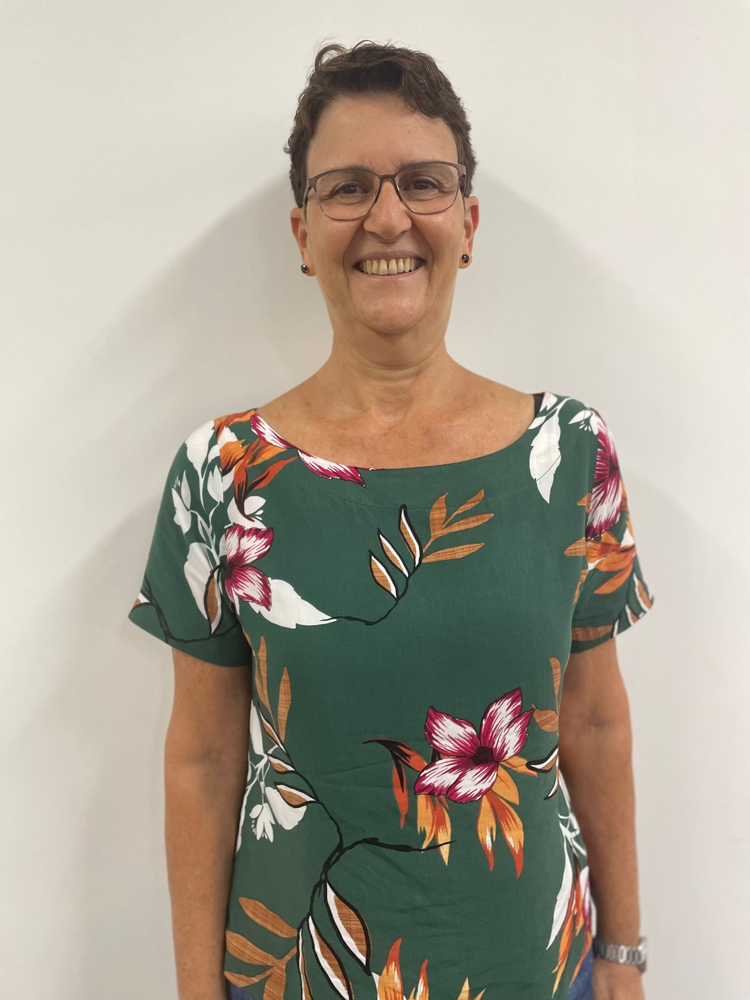

Este artigo foi pensado e estruturado para comemorar os 80 anos da licenciatura em Matemática na Bahia. Nesse sentido, (re)lembramos o contexto histórico e social dos processos formativos dos/as professores/as desde o período colonial chegando ao atual termo moderno: licenciatura. Desde 1943, quando o curso de graduação em Matemática começou a ser desenvolvido, a Licenciatura no Instituto de Matemática e Estatística da Universidade Federal da Bahia mantém-se em constantes investimentos de reestruturação, visando aprimoramento e atualização no sentido de proporcionar desenvolvimento de competências e habilidades para futuros e futuras docentes de Matemática do Ensino Fundamental e Ensino Médio.
Se a educação sozinha não transforma a sociedade, sem ela, tampouco, a sociedade muda. (Paulo Freire)
Onde quer que haja mulheres e homens, há sempre o que fazer, há sempre o que ensinar, há sempre o que aprender. (Paulo Freire)
O ano de 2023 despontou no horizonte dos licenciados e licenciadas baianos/as como um ano de comemorações, afinal, há exatamente 80 anos iniciavam-se, na recém-fundada Faculdade de Filosofia da Bahia — FF (13/06/1941), os cursos de graduação com habilitações em Bacharelado e em Licenciatura.1
No dia 15 de março de 1943, o Professor Isaías Alves, no papel de Diretor, proferiu a aula inaugural da Faculdade de Filosofia. [...] abrangendo as áreas de Filosofia, Letras, Pedagogia, Ciências e Didática. A área de Letras congregava os cursos de Letras Clássicas, Neo-Latinas e Anglo-Germânicas, e a área de Ciências compunha-se dos cursos de Matemática, Física, Química, História Natural, Geografia e História e Ciências Sociais. (Passos, 1999, p. 32).
Comemorar significa também relembrar o passado, analisar o presente e construir caminhos mais favoráveis para o futuro.
A história da Institucionalização da formação de docentes no Brasil “foi deliberadamente mediada por aspectos políticos, econômicos e sociais” (Santos; Mororó, 2019, p. 3).
A atenção que deveria ser dada à educação através da formação de seu corpo docente, já permeava o pensamento de filósofos dos séculos XVI e XVII, a exemplo de Jan Amos Komenský ou Comenius (1592) considerado o fundador da didática.
Comenius acreditava em uma educação para a vida toda. Seu projeto pedagógico é fundamentalmente um plano de sociedade — de sua organização, sua política e seu funcionamento. Para formar uma nação equilibrada, em tempos de guerras e de epidemias, seria fundamental uma sólida formação, para a qual seriam necessárias as instituições que Comenius chamava de escolas universais. (Boto, 2021, p. 41).
Apesar de certas divergências, a exemplo do controle das pessoas e a obrigatoriedade em relação ao culto católico, a pedagogia defendida por Comenius, em relação à educação democrática e igualitária para a sociedade, pode ser considerada o sonho de consumo de todos os professores e todas as professoras que lutam por este ideal — educação de qualidade para todos e todas.
Ainda no século XVII, segundo Dermeval Saviani (2005, p. 12), “o primeiro estabelecimento de ensino destinado à formação de professores teria sido instituído por São João Batista de La Salle em 1684, em Reims, com o nome de “Seminário dos Mestres”.
Na Europa do século XVIII as questões políticas e sociais agitavam a população, causando um sentimento de luta, desejo de mudanças e transformações na condição precária em que viviam sob um regime ainda feudal, dominado pela monarquia absolutista. Através de vários movimentos, a exemplo da Revolução Industrial e da Revolução Francesa, o povo almejava alcançar os ideais de Liberdade, Igualdade e Fraternidade difundidos naquele momento. Para alcançar esses objetivos, porém, seria preciso um novo olhar sobre a educação que, até aquele momento, se mantinha basicamente sob o poder da Igreja e dirigida a poucos. De acordo com Marlete Schaffrath (2008, p. 143): “Este período foi também muito rico em reflexões pedagógicas, principalmente em torno de uma educação leiga e a cargo do Estado”. Esses movimentos favoreceram a instalação, em Paris, da primeira École Normale, ocorrida em 1795.
Apesar das ações ocorridas no século XVII e XVIII, o desenvolvimento das discussões em torno da formação de docentes só começou a ganhar mais força e a ter mais destaque no século XIX, devido às necessidades que começaram a surgir “no mundo do trabalho, sobretudo após a Revolução Industrial, a partir da qual se passou a pensar uma educação mais atenta à qualificação de mão-de-obra.” (Schaffrath, 2008, p. 143) Neste sentido, pontua Luiz Antônio Cunha (1979, p. 114):
Os sistemas escolares europeus praticamente excluíam os trabalhadores, e as escolas eram frequentadas pelas classes dominantes e pelas camadas médias da população. Os filhos dos trabalhadores, e preferencialmente os órfãos e abandonados, quando muito eram acolhidos por entidades confessionais.
A questão envolvendo classe social perpassa os caminhos de todas as atividades e de todas as relações sociais, o que não foi diferente no contexto educacional, ou seja, a educação era pensada para poucos, sendo estes os homens de classe social mais favorecida. Observa-se também a presença da questão de gênero, uma vez que as mulheres eram deixadas de fora do núcleo educacional. Esse contexto histórico e cultural, infelizmente, ainda nos atinge nos dias atuais em muitas sociedades.
No Brasil as preocupações com a formação de professores foram tardias, pois o contraste social com o contexto europeu era imenso. “Enquanto lá se vivia um momento de grandes transformações sociais, aqui ainda se encontrava uma sociedade escravista, agrária e submetida a uma política econômica opressora por parte da Coroa Portuguesa” (Schaffrath, 2008, p. 143). Somente após a independência do país, começaram a surgir ideias para se instruir a população, com o objetivo de se consolidar o novo Estado Brasileiro.
Em 1823 um decreto imperial cria uma escola de primeiras letras, mas com o objetivo principal de instruir as corporações militares:
Crêa uma Escola de primeiras lettras, pelo methodo do Ensino Mutuo para instrucção das corporações militares. Convindo promover a instrucção em uma classe tão distincta dos meus subditos, qual a da corporação militar, e achando-se geralmente recebido o methodo do Ensino Mutuo, pela facilidade e precisão com que desenvolve o espírito, e o prepara para acquisição de novas e mais transcendentes ideas; [...] sendo em benefício não somente dos militares do Exército, mas de todas as classes dos meus subditos que queiram aproveitar-se de tão vantajoso estabelecimento. (Brasil, 1823, p. 41).
Somente em 1827, a Lei Imperial de 15 de outubro estabelece o ensino das Primeiras Letras para toda a população. Podemos considerar esta Lei como a primeira tentativa para a consolidação da formação de professores no Brasil. Alguns dos seus principais artigos assim estabeleciam:
Art. 1 Em todas as cidades, vilas e lugares mais populosos, haverão as escolas de primeiras letras que forem necessárias.
Art. 4 As escolas serão do ensino mútuo2 nas capitais das províncias; e serão também nas cidades, vilas e lugares populosos delas, em que for possível estabelecerem-se.
Art. 5 [...] os Professores que não tiverem a necessária instrução deste ensino, irão instruir-se em curto prazo e à custa dos seus ordenados nas escolas das capitais.
Art. 6 Os professores ensinarão a ler, escrever, as quatro operações de aritmética, prática de quebrados, decimais e proporções, as noções mais gerais de geometria prática, a gramática de língua nacional, e os princípios de moral cristã e da doutrina da religião católica e apostólica romana, proporcionados à compreensão dos meninos; preferindo para as leituras a Constituição do Império e a História do Brasil.
Art. 7 Os que pretenderem ser providos nas cadeiras serão examinados publicamente perante os Presidentes, em Conselho; e estes proverão o que for julgado mais digno e darão parte ao Governo para sua legal nomeação.
Art. 11. Haverão escolas de meninas nas cidades e vilas mais populosas, em que os Presidentes em Conselho, julgarem necessário este estabelecimento.
Art. 12. As Mestras, além do declarado no Art. 6, com exclusão das noções de geometria e limitado a instrução de aritmética só as suas quatro operações, ensinarão também as prendas que servem à economia doméstica; e serão nomeadas pelos Presidentes em Conselho, aquelas mulheres, que sendo brasileiras e de reconhecida honestidade, se mostrarem com mais conhecimento nos exames. (Brasil, 1827; grifos nossos).
Várias discussões podem emergir desses artigos, a exemplo da questão de gênero, como aparece no artigo 11, ou seja, impõe-se a criação de escolas para meninos e escolas para meninas; também no artigo 12 fica estabelecido que as mulheres exercerão a docência para as meninas desde que atendam às normas de boa conduta e honestidade. Ainda no artigo 12 fica estabelecida a exclusão de conteúdos matemáticos para as meninas e inclusão do ensino das prendas domésticas. São posicionamentos que demarcam e que deixam evidentes as questões históricas e culturais que envolviam a criação e formação das pessoas, particularmente, a exclusão e o desinteresse na formação educacional das mulheres. Mas essa discussão será ampliada em outro artigo; no momento, voltemos ao artigo 5 — “os Professores que não tiverem a necessária instrução deste ensino, irão instruir-se em curto prazo e à custa dos seus ordenados nas escolas das capitais” — que estabelece a discussão do nosso contexto (Grifos nossos). A determinação de que os custos com a formação ficariam a cargo do próprio interessado demonstra que a educação dos homens continuava sendo pensada para poucos — os privilegiados da elite.
Segundo Leonor Tanuri (2000, p. 63), “pouco resultou [...] do Governo Central [...] preparo dos seus docentes de conformidade com a lei de 1827. As primeiras escolas normais brasileiras só seriam estabelecidas, por iniciativa das Províncias, logo após a reforma constitucional de 12/8/1834”.
Essa reforma constitucional, conhecida como Ato Adicional de 1834, foi promulgada através de acordos entre os grupos políticos liberais e os conservadores, estabelecendo uma maior autonomia das Províncias e a criação de Assembleias Legislativas. Diante desse ‘ajuste’ político, o grupo conservador que assumiu o poder na província do Rio de Janeiro criou, em 1835, a primeira escola normal brasileira no município de Niterói. Nesta escola, “mais do que ensinar a ler e escrever, [...] o professor deveria funcionar muito mais como agente disseminador de uma mentalidade moralizante do que como difusor de conhecimentos”; afinal, os objetivos dos grupos dominantes com a instrução pública era “fazer com que os populares identificassem os objetivos da classe dirigente com os seus” (Schaffrath, 2008, p. 150).
Mais uma vez, chamamos atenção para a questão das interseccionalidades, englobando as categorias de gênero, classe, raça e poder, que ocorriam no contexto social e não foi diferente no contexto das escolas normais visto que, como já foi pontuado, essas são questões históricas e culturais que estão enraizadas na sociedade. A pesquisadora Marlete Schaffrath (2008, p. 151) frisa em sua pesquisa:
[...] um ponto que merece destaque no estudo da Escola Normal de Niterói refere-se à ausência do elemento feminino e do negro na busca de preparo para a docência. A instrução era pública, mas o saber era distribuído em porções e não atingia a todos os segmentos da sociedade. Na verdade, somente aqueles que eram homens, livres e possuíam propriedades eram depositários do nobre benefício de ser cidadão do Império. Os negros, inclusive os já libertos, eram proibidos de frequentar as escolas públicas [...] e a Escola Normal. [...] Quanto à discriminação sofrida pelas mulheres, era um pouco mais sutil dada a prerrogativa da diferenciação de currículo em relação ao que era oferecido nas escolas primárias masculinas. A ela era dado aprender leitura, escrita e as quatro operações matemáticas, sendo, portanto, interditado ensino de Geometria, Decimais e Proporções, oferecido aos meninos.
Persistem os mecanismos de discriminação com os considerados pertencentes às “minorias” pela representação social. É importante ressaltar que desde o tempo dos Jesuítas, que fundaram as primeiras escolas no Brasil em 1549, com o objetivo de evangelizar os homens da população indígena, as mulheres dessa etnia foram desconsideradas. É diante desse quadro histórico que, infelizmente, ainda nos deparamos com a realidade atual, ou seja, observamos que as escolhas profissionais ainda são demarcadas pelas relações de gênero, classe social, raça/etnia e poder. As primeiras Escolas Normais não tiveram o êxito esperado, “o insucesso [...] e os parcos resultados por elas produzidos granjearam-lhes tal desprestígio que alguns presidentes de Províncias e inspetores de Instrução chegaram a rejeitá-las” (Tanuri, 2000, p. 65). Ocorreu um período de incertezas generalizado em todas as províncias brasileiras, só voltando a atingirem um certo grau de valorização a partir dos anos 1870, quando:
[...] transformações de ordem ideológica, política e cultural foram acompanhadas de intensa movimentação de ideias [...] A crença de que um “país é o que a sua educação o faz ser” generalizava-se. [...] ocorre também o enriquecimento de seu currículo, ampliação dos requisitos para ingresso e sua abertura ao elemento feminino. (Tanuri, 2000, p. 66).
Diante desse contexto, faz-se necessário pontuar o objetivo inicial das escolas denominadas de Escola Normal:
[...] foi pensada com a função de transmitir, consolidar e garantir, através de “normas”, os objetivos de ordem social e moral estabelecidos por seus dirigentes, de maneira que as/os futuras/os professoras/es se identificassem e assumissem tais objetivos como seus. [...] na época, a intenção era controlar a população e integrá-la aos ideais da boa ordem e da boa conduta, não tardou para que as mulheres fossem vistas como o elemento agregador e transmissor destas características. Assim, o termo “Escola Normal” esteve associado as pretensões de “normalidade” que significava, neste caso, seguir as regras da moral, da boa conduta, do amor a pátria e aos seus dirigentes. Características condizentes ao que se estabelecia como próprio da conduta feminina. (Menezes, 2019, p. 36).
Mesmo com o advento da República, que transformou as Províncias em Estados Federados, o campo educacional continuou pobre de significativas mudanças, as relações de poder continuaram atuantes mantendo os mesmos interesses dos grupos dominantes do período imperial. Alguns Estados se
[...] organizaram independentemente, ao sabor de seus reformadores, [...] sob a liderança dos estados mais progressistas, especialmente São Paulo, e registram alguns avanços no que diz respeito ao desenvolvimento qualitativo e quantitativo das escolas de formação de professores. (Tanuri, 2000, p. 68).
Na década de 30 do século XX, algumas reformas e atos ocorreram, a exemplo da Reforma Francisco Campos (1931), que reorganizou e modernizou o ensino secundário: aumentando o curso de 5 para 7 anos; tornando a frequência obrigatória; passando o curso para o regime de dois ciclos, sendo o primeiro chamado de fundamental e o segundo de complementar; criando o regramento para as avaliações; criando o Conselho Nacional de Educação. Ao assumir a pasta da Educação, em 1930, o ministro Francisco Campos destacou em seu discurso: “queremos ter professores sem cuidar de formá-los” e, em 1931, ao falar das motivações do Decreto n 19.890, relatou:
O Brasil não cuidou ainda de formar o professorado secundário, deixando a educação da sua juventude entregue ao acaso da improvisação e da virtuosidade, sendo inacreditável que nenhum esforço haja sido tentado naquela direção. (Campos apud Castro, 1974, p. 629).
Já em 1932 ocorreu o Manifesto dos Pioneiros da Educação Nova, liderado por Anísio Teixeira e assinado também por Fernando de Azevedo, Lourenço Filho e outros intelectuais. O manifesto defendia uma educação pública, laica e gratuita:
[...] o dever mais alto, mais penoso e mais grave é, de certo, o da educação que, dando ao povo a consciência de si mesmo e de seus destinos e a força para afirmar-se e realizá-los, entretém, cultiva e perpetua a identidade da consciência nacional, na sua comunhão inteira com a consciência humana. (Teixeira, 1984, p. 425).
As ideias defendidas por Anísio Teixeira na época demonstravam a preocupação com a formação da classe docente, dizia ele: “Se a ‘escola normal’ for realmente uma instituição de preparo profissional do mestre, todos os seus cursos deverão possuir o caráter específico que lhe determinará a profissão do magistério” (Teixeira, 1933, p. 2). Nesse documento, Anísio traça o programa de formação da “profissão do magistério — que é mais uma arte do que uma ciência — não se pode preparar o professor senão por meio do aprendizado direto”. Essa reforma transforma a escola normal do Distrito Federal em Instituto de Educação.3
Esses movimentos e decretos retratavam as preocupações de alguns intelectuais em relação a situação educacional em que se encontrava o país. Havia, como já pontuado, um descaso com a educação que era oferecida, os considerados ‘minorias’ não eram vistos. A proposta trazida pela educação nova tinha por objetivo integrar a escola ao meio social, buscando valorizar todas as pessoas em suas individualidades e em suas regionalidades, sem perder de vista as relações humanas cooperativas e integrativas.
Foi nesse contexto, com o advento da criação das Universidades do Distrito Federal (1935) e da Universidade de São Paulo — USP (1934), que as Escolas de Professores idealizadas por Anísio Teixeira, Fernando de Azevedo e todos os participantes do movimento renovador foram incorporadas às Universidades como Escolas de Educação. Surgiu assim, em 1939,
[...] o curso de Pedagogia [...] na Faculdade Nacional de Filosofia da Universidade do Brasil. [...] visando à dupla função de formar bacharéis, [...] e licenciados, destinados à docência nos cursos normais. Iniciava-se um esquema de licenciatura que passou a ser conhecido como “3+1”, ou seja, três anos dedicados às disciplinas de conteúdo — no caso da Pedagogia, os próprios “fundamentos da educação” — e um ano do Curso de Didática, para formação do licenciado. (Tanuri, 2000, p. 74).
Segundo Dermeval Saviani (2005, p. 17), “aos Cursos de Licenciatura coube a tarefa de formar professores para as disciplinas específicas que compunham os currículos das escolas secundárias; e os Cursos de Pedagogia ficaram com o encargo de formar os professores das Escolas Normais”.
Observa-se que “o título de licenciado, portanto, não tinha origem em um curso em si, mas se tratava de uma complementação pedagógica justaposta ao curso de bacharelado” (Santos; Mororó, 2019, p. 5).
Durante o período de 1942 a 1946 foram promulgados decretos-leis conhecidos como “Leis Orgânicas do Ensino”, que tinham como objetivos regulamentar o funcionamento e organização do ensino no Brasil na tentativa de garantir “uma base comum aos sistemas estaduais de formação de professores” (Tanuri, 2000, p. 75). E continua esclarecendo a autora:
A Lei Orgânica do Ensino Normal (decreto-lei 8530 de 1946) não introduziu grandes inovações, apenas acabando por consagrar um padrão [...] o Normal foi dividido em dois ciclos: o primeiro fornecia o curso de formação de “regentes” do ensino primário, em quatro anos, e funcionaria em Escolas Normais Regionais; o curso de segundo ciclo, em dois anos, formaria o professor primário e era ministrado nas Escolas Normais e nos Institutos de Educação. (Tanuri, 2000, p. 75).
Durante o período conturbado vivido pela população brasileira com o regime militar de 1964, a estrutura educacional foi reajustada e reformulada. Em 1968, ocorreu a reformulação do ensino superior através da Lei 5.540 (Brasil, 1968).
A Reforma Universitária de 1968 constituiu-se também como um marco regulatório da formação de professores, pois foi inaugurado a partir daí um novo campo de estudos nos espaços das faculdades/centros de educação das universidades. Nessa conjunção, as licenciaturas, que até então estavam vinculadas à Faculdade de Filosofia, Ciências e Letras, ganham outra configuração: departamentos específicos de cada área do conhecimento; um espaço de formação pedagógica. (Santos; Mororó, 2019, p. 6).
Três anos depois, a Lei 5.692 (Brasil, 1971) alterou a estrutura do Ensino Primário e do Ensino Médio, que passaram a ser designados, respectivamente, de Primeiro Grau, com duração de oito anos, e Segundo Grau, com duração de três a quatro anos,
Em decorrência dessa nova estrutura desapareceram as Escolas Normais. Em seu lugar foi instituída a Habilitação Específica de 2 grau para o exercício do magistério de 1 grau (HEM), [...] a formação de professores para o antigo ensino primário, foi reduzida a uma habilitação dispersa em meio a tantas outras. [...] a lei 5692/71 previu a formação de professores em nível superior, em cursos de Licenciatura curta (3 anos de duração) ou plena (4 anos de duração). Ao Curso de Pedagogia, além da formação de professores para HEM, conferiu-se a atribuição de formar os especialistas em educação [...] diretores, orientadores, supervisores e inspetores de ensino. (Saviani, 2005, p. 19; 20; 21).
Durante as décadas de 80 e 90, no contexto cultural e educacional do país, já se apresentava um quadro de insatisfação geral em relação à qualidade dos cursos de formação docente, os quais apresentavam falhas e carências em relação à atuação do governo. Desse modo, vários educadores se reuniram em movimentos de luta, na tentativa de alcançar novas alternativas para melhorar a formação do corpo docente. Era um momento de grandes conflitos, o país estava envolvido com a ascensão das políticas neoliberais que assolavam o mundo e atingiam os critérios e a qualidade do ensino. Fazia-se necessária e urgente a constituição de uma nova estrutura, uma nova reforma que, de fato, pudesse atender aos anseios de uma sociedade que já vivenciava o contexto da industrialização. Segundo Santos e Mororó (2019, p. 9), o “contexto de luta e de embate ideológico entre as concepções alternativas dos movimentos organizados da sociedade e a concepção neoliberal representada pelo capital” deu origem à construção de uma nova Lei de Diretrizes e Bases da Educação Nacional — Lei 9.394 (Brasil, 1996), elaborada em consonância com a Constituição de 1988.
Com base nos preceitos da Constituição Federal de 1988 é que se pode dar fim à discussão acerca do ensino privado, uma vez que restou pacificado o entendimento trazido pelo art. 209 quanto ao ensino livre à iniciativa privada, desde que sejam cumpridas as normas gerais educação nacional e o seu funcionamento seja autorizado e avaliado pelo poder público. E insere, ademais, a questão curricular, depois regulamentada pela LDB/96, no sentido de que devem ser fixados conteúdos mínimos para o ensino fundamental, de modo a “assegurar formação básica comum e respeito aos valores culturais e artísticos, nacionais e regionais” — art. 210. A importância da CF/88 e sua principal contribuição à LDB/96 está no fato de efetivamente considerar a educação como um serviço público de responsabilidade do Estado, em suas diversas esferas. (Carvalho; Rosa, 2020, p. 298).
Corroborando esse debate, Iria Brzezinski (2010, p. 190) reforça o contexto da promulgação da nova LDB:
O cenário da tramitação da LDB/1996 revelou o campo de disputa ideológica entre o público e o privado, tendo como foco a relação conflitante entre a defesa da escola pública, laica, gratuita para todos e de qualidade socialmente referenciada em todos os níveis de escolarização, e o ensino privado, administrado pelos empresários que não encontraram obstáculos da sociedade política para transformar em mercadoria o direito à educação preceituado na Constituição de 1988. Esse cenário foi marcado no Congresso Nacional por uma disputa na arena de poder na qual se aglutinaram forças de alguns parlamentares do Colégio de Líderes em torno das reivindicações do mundo vivido dos educadores, representado pelo Fórum, bem como de outros parlamentares que atendiam interesses dos empresários e lobistas do ensino privado.
A nova LDB “estabelece que a formação de docentes para atuar na educação básica far-se-á em nível superior, em cursos de licenciatura, de graduação plena, em universidades e institutos superiores de educação” (Tanuri, 2000, p. 85). Estabelece também a ampliação do acesso e obrigatoriedade à educação básica para todas as pessoas brasileiras.
A educação básica (educação infantil, ensino fundamental e o ensino médio) é um conceito mais do que inovador para um país que, por séculos, negou, de modo elitista e seletivo, a seus cidadãos, o direito ao conhecimento pela ação sistemática da organização escolar. (Cury, 2008, p. 294).
Segundo Luiz Carvalho e Rosana Rosa (2020, p. 299): “a LDB/96 trouxe avanços [...] para a construção de propostas educacionais que finalmente superem os paradigmas da ‘transmissão do conhecimento’ e possibilitem a extinção da educação bancária combatida por Paulo Freire”. Assim como as normativas que, em geral, apresentam aspectos de avanços e desafios que estão sempre sendo ajustados e modificados de acordo com a época e o contexto da sociedade em que estão inseridas, a LDB também entra nesta lista, afinal, a sociedade está em constante transformação. O que importa é o olhar, a vontade de crescer e melhorar. Dessa forma, precisamos da ajuda de todas as pessoas conscientes de que só através da EDUCAÇÃO conseguiremos enfrentar as adversidades que o contexto social nos apresenta.
A LDB não será suficiente para, sozinha, promover o necessário salto de qualidade da educação pública brasileira. De toda forma, a Lei faz parte do extenso repertório de políticas necessárias para que esse salto seja possível — é necessário, entre outros pontos, financiamento adequado, condições de trabalho, formação continuada, valorização salarial e profissional dos trabalhadores da educação. Desse modo, as escolas serão capazes de assegurar inclusão e qualidade do ensino a todos os estudantes. (Souza; Araújo; Silva, 2017, p. 159).
É nesse sentido que a licenciatura como espaço de formação profissional dos educadores e das educadoras é também um espaço de luta em prol da valorização salarial e profissional, questões imprescindíveis para alcançarmos a qualidade educacional desejada e a equidade de inserção e permanência de quem ocupa esse espaço.
A Bahia foi sede de alguns pioneirismos em relação ao estudo da Matemática. Segundo o pesquisador Clóvis Pereira da Silva (1999, p. 14), “no Colégio da Bahia4, em 1757, foi criada a Faculdade de Matemática, na qual os alunos estudavam geometria euclidiana, perspectiva, trigonometria, equações algébricas, entre outros”. Para a época, os estudos desses temas foram inovadores e se constituiu no começo de uma longa jornada. Outro pioneirismo inovador na Bahia ocorreu com a presença majoritária de mulheres no curso de graduação em Matemática da Faculdade de Filosofia.
A “novidade” presente no índice numérico da participação das mulheres no curso de Matemática em plena década de 40 do século passado se mostrou motivadora pelo fato do campo da Matemática ainda ser considerado adverso à participação das mulheres, portanto, no passado, mulheres ingressando no curso superior em Matemática configurava-se como uma novidade surpreendente no cenário baiano. (Menezes, 2019, p. 28).
Mas em relação ao processo de formação de professores e professoras a Bahia seguiu o percurso ocorrido no país, ou seja, o processo foi lento e atravessado por questões sociais, políticas e econômicas que demarcavam o poderio das classes dominantes e o abandono das classes sociais menos favorecidas. O pensamento era educar as elites e instruir a população para atender ao mercado capitalista com mão de obra mais especializada. Pensamento fortalecido pela “ideologia da Igreja Católica, sólida instituição, que se posicionava claramente a favor do ensino acadêmico, classicista e sobretudo classista (Cury, 1994, p. 19, apud Brzezinski, 2010, p. 189). Contudo, com a fundação da Faculdade de Filosofia da Bahia (FF), ocorrida em 1941, tendo como articulador e fundador o professor Isaías Alves, ocorreu a institucionalização do processo formativo de professores e professoras, pois neste espaço se deu início aos cursos de graduação que começaram a funcionar em março de 1943. Nessa época, ao escolher a graduação em matemática, os/as estudantes, após três anos de curso, estavam aptos a obter o título de Bacharel em Matemática e, segundo Januária Bertani (2011, p. 59), havia “a necessidade do título de bacharel para a matrícula no curso de Didática”. Esse processo é conhecido como 3+1.
[...] em 1946, foram estabelecidas novas condições para o regime didático das faculdades de filosofia. Dentre outros aspectos, foi ampliado para quatro anos o tempo de estudo necessário para obtenção do diploma de bacharel ou de licenciado. Para os três primeiros anos, haveria um currículo fixo, enquanto que, no quarto ano, para obter a licenciatura, os alunos deveriam receber formação didática, teórica e prática, na escola de aplicação anexa, além das disciplinas regulares do curso de Didática. Aqueles que não quisessem a licenciatura, poderiam cursar durante o quarto ano cadeiras complementares oferecidas na faculdade para receberem o diploma de bacharel. (Dias; Lando; Freire, 2018, p. 151).
Segundo Bertani (2011, p. 62), “o programa de ensino do curso de Didática seguia o “padrão da Faculdade Federal de São Paulo”, e as atividades de prática de ensino eram realizadas no Colégio de Aplicação. O curso de Didática era composto pelas seguintes disciplinas:
Didática Geral, Didática Especial de Matemática, Psicologia Educacional, Administração Escolar, Fundamentos Biológicos da Educação e Fundamentos Sociológicos da Educação. Sua carga horária semanal era de 18 horas, com três horas semanais para cada disciplina, que eram frequentadas por alunos de todos os cursos, exceção para a didática especial, que tinha seis ramos: filosofia; matemática; geografia e história; ciências sociais; letras: clássicas, neolatinas e anglo germânicas; e pedagogia. (Dias; Lando; Freire, 2018, p. 151)
Antes desse período, atuavam nas escolas secundárias como docentes de matemática os profissionais formados em engenharia. Particularmente, assumiam a cátedra de Matemática os professores catedráticos da Escola de Engenharia da Bahia e do Colégio da Bahia (atual Colégio Central). Portanto o advento da fundação da FF da Bahia estabeleceu um marco fundamental para a profissionalização de professores e professoras de Matemática no Estado — a criação da formação especifica do docente e da docente em Matemática. Somente em 1956, porém, o termo Licenciatura passa a ser usado, “as quatro séries eram compreendidas como sendo do Curso de Licenciatura em Matemática, com três anos de matemática e um de didática, voltada para as questões referentes ao ensino da matemática e das disciplinas de caráter pedagógico comuns a todos os cursos de licenciatura” (Bertani, 2011, p. 63). Uma das professoras que assumiu a cadeira de Didática Especial da Matemática foi a professora Martha Maria de Souza Dantas, concluinte do curso de matemática da FF na turma de 1947. Martha Dantas (1993, p. 15) não se sentia confortável com a metodologia matemática usada nas escolas na época.
[...] os cursos de metodologia da matemática eram por vezes, até ridicularizados [...] foram essas dificuldades que me levaram [...] a observar, em 1953, na Bélgica, França e Inglaterra, o ensino da Matemática, [...] eu poderia [...] sabendo transmiti-la, [...] arrancar das garras do medo, quantos, no ensino da Matemática foram mal introduzidos. A partir daí eu não podia mais separar o conhecimento da pedagogia, porque só dessa união podem advir soluções para eliminar o sacrifício inútil de muitos alunos, causado por um ensino irresponsável. (Dantas, 1993, p. 27-28).
Nesta fala, a professora Martha reforça a importância dos cursos de Licenciatura na formação do educador e da educadora. É preciso conciliar conhecimento específico da área com conhecimento didático-pedagógico.
Com o pensamento de aprimorar o conhecimento específico da Matemática na Bahia, a professora Arlete Cerqueira Lima, concluinte do curso de Licenciatura em Matemática da turma de 1954, vai à USP, em 1957, estudar a nova matemática que estava sendo difundida em outros Estados — era a Matemática Moderna que começava a ser introduzida. Arlete foi a pioneira no ensino das disciplinas “Teoria dos Conjuntos, Álgebra Linear, Álgebra Moderna, Topologia Geral, Teoria de Galois, Funções Analíticas, Lógica Formal” (Menezes, 2019, p. 219).
Juntas, Martha e Arlete sentiram que precisavam se unir com o objetivo de aprimorar os conhecimentos matemáticos que eram praticados na Bahia. Após enfrentarem as relações de gênero e de poder que se faziam presentes no campo matemático baiano, elas articularam e, finalmente, criaram, em 1960, o Instituto de Matemática e Física da Universidade da Bahia.5
Com a Reforma Universitária de 1968 o Instituto de Matemática passa a ter vida própria, separando-se do Instituto de Física, assumindo todo o ensino de Matemática da universidade, ou seja, o curso de Matemática passa a ter seu espaço, seu departamento e sua estrutura própria.
De 1968 até os dias atuais, a Licenciatura em Matemática da UFBA tem procurado se ajustar ao perfil dos/as ingressantes. Há uma constante busca por atualização das disciplinas e preparação dos/as futuros/as docentes.
Desde o momento em que foi criado através do Decreto Federal n 10.664 (Brasil, 1942), o curso de graduação em Matemática continuamente se reestrutura para atender às demandas normativas e sociais. Em 1988 realizou uma grande mudança no perfil do curso buscando atingir os seguintes objetivos:
- Adequar o currículo à realidade dos(as) alunos(as) que ingressavam e à realidade educacional brasileira da época; - Agrupar as disciplinas em dois ciclos: um básico [...] e um profissionalizante; - Incluir, no início do curso, disciplinas de conteúdo matemático de nível médio com abordagem de nível superior; - Estabelecer um encadeamento de disciplinas, através do sistema de pré-requisitos. (UFBA, 1988, p. 13).
Em 2007 adaptou seu Projeto Pedagógico do Curso — PPC às exigências da Resolução do Conselho Nacional de Educação (CNE) no que tange às dimensões práticas e aos estágios supervisionados para os Cursos de Formação de Professores da Educação Básica em nível superior.
Em 2008 o Instituto de Matemática e Estatística se incorporou ao Programa Presidencial de Apoio a Planos de Expansão e Reestruturação das Universidades Federais (REUNI), passando a oferecer 45 vagas anuais para o Curso Noturno de Licenciatura em Matemática. Esse novo curso tem uma grande relevância no sentido de proporcionar oportunidade ao público formado, em geral, por trabalhadores, para a realização profissional como docente em matemática para atuar no Ensino Fundamental e Ensino Médio. Em 2013 ocorreu uma nova reformulação no PPC objetivando adequar e preparar os/as discentes para o Exame Nacional de Desempenho dos Estudantes (ENADE). Em 2024.1 o programa do curso englobará os temas de Gênero, Direitos Humanos, Relações Étnico-Raciais e Meio Ambiente, objetivando preparar os/as licenciados/as para assumirem uma relação de integração e respeito com a diversidade cultural e social característica da nossa sociedade.
Um importante trabalho é desenvolvido pelo Laboratório de Ensino de Matemática e Estatística — LEMA/UFBA, espaço que tem “contribuído para a formação, difusão, popularização e desmistificação da ciência, sem deixar de enfatizar as justificativas que caracterizam o pensamento científico” (UFBA, 2023).
Atualmente o curso disponibiliza anualmente 60 vagas para ingresso no turno diurno. A partir de 2024 os novos ingressantes irão desenvolver seus estudos baseados na nova matriz curricular que está sendo avaliada pelos Conselhos Superiores da Universidade e deve ser implementada ainda no ano de 2024.
Quadro 1 — Matriz Curricular da Licenciatura em Matemática da UFBA
| Disciplinas | Carga Horária |
|---|---|
| Obrigatórias | 2655 horas |
| Optativas | 180 horas |
| Atividades Complementares | 200 horas |
| Atividades de Extensão | 288 horas |
| TOTAL | 3323 horas |
Fonte: Elaboração própria a partir do PPC/Licenciatura em Matemática (UFBA, 2023).
De acordo com o Projeto Pedagógico do Curso (UFBA, 2023, p. 22), “os componentes obrigatórios de Laboratório de Ensino de Matemática I, Laboratório de Ensino de Matemática II e Seminários Temáticos, contém cada um, 15 horas dedicadas obrigatoriamente à extensão”. As disciplinas obrigatórias apresentam a seguinte distribuição de acordo com o núcleo de formação:
Quadro 2 — Disciplinas Obrigatórias da Licenciatura em Matemática da UFBA
| Conhecimentos Matemáticos | 1650 horas |
| Conhecimentos das Ciências da Educação | 705 horas |
| Conhecimentos das Ciências Afins | 300 horas |
Fonte: Elaboração própria a partir do PPC/Licenciatura em Matemática (UFBA, 2023).
Ao longo do processo formativo, os/as estudantes realizam também estágios supervisionados no total de 405 horas e disciplinas de dimensão prática, perfazendo o total de 405 horas.
Como foi visto anteriormente, além das disciplinas de conhecimento especifico da matemática, os/as estudantes, desde o segundo semestre, já começam a participar dos assuntos relacionados a didática pedagógica e estágios, visando adquirir experiência no seu fazer em sala de aula. Essas atividades serão assim distribuídas:
Quadro 3 — Disciplinas Obrigatórias da Licenciatura em Matemática da UFBA
| Dimensão Prática | 855 horas |
| Estágios Supervisionados | 405 horas |
Fonte: Elaboração própria a partir do PPC/Licenciatura em Matemática (UFBA, 2023).
Em todo e qualquer currículo e área de conhecimento, os desafios estão sempre presentes e, no caso especifico das licenciaturas, é fundamental o olhar para o ser que ingressa no curso — o futuro professor e a futura professora.
[...] o ensino da Matemática, quando feito com seriedade, exige pesquisa. Pesquisa dos conteúdos a trabalhar que revele, constantemente, o que eliminar e o que introduzir. Pesquisa dos melhores processos para apresentar ao aluno o conteúdo selecionado. [...] A pesquisa em Educação Matemática é um tema vital para os que buscam novas soluções para a Educação. (Dantas, 1993, p. 25; 26;).
A fala da professora Martha mostra a importância da pesquisa constante entre conteúdos e formas de abordagem. É fundamental a perspectiva de proporcionar oportunidades para que as pessoas possam criar seus processos de aprendizagem formativa de forma individual e, ao mesmo tempo, coletiva.
O corpo docente do IME/UFBA tem consciência de que muito ainda precisa ser feito para proporcionar e alcançar uma formação discente preparada para enfrentar as novas práticas, as novas tecnologias, as multiplicidades/pluralidades sociais e culturais que despontam no novo século já em andamento.
No presente ano (2024) será lançado o Edital de Concurso para docentes com formação de Doutorado em Educação Matemática; além disso, receberemos, através de um processo de redistribuição de vaga, um professor, ex-aluno do nosso curso, com formação na área de Educação Matemática. Uma grande notícia para nossa comunidade discente, que muito tem reivindicado o aprimoramento das práticas didáticas.
Diante dos novos desafios, faz-se necessário que todas as pessoas estejam preparadas para girar a manivela e construir novas formas didáticas e pedagógicas para oferecer uma formação de qualidade aos futuros e às futuras docentes dos conhecimentos matemáticos na perspectiva do ensino para a Educação Básica.
Quando estamos escrevendo sobre um contexto tão complexo como a formação de docentes, não temos como dizer que chegamos a conclusões ou considerações finais, pois estamos tratando de um processo que se aprimora, se recria e se ressignifica constantemente, ao sabor dos novos tempos e ventos que sopram na atmosfera da sociedade em transformação. E consideramos positivo esse processo, pois transformações levam, em geral, a aprimoramento e crescimento, essenciais no processo educacional.
Apesar de, neste texto, se tentar construir um relato temporal linear, não há, na verdade, uma trajetória em linha reta. O processo de formação docente se redimensiona progressivamente, pois ocorre em um contexto sinuoso de avanços e constantes desafios. Afinal, estamos tratando de um processo que é construído em uma relação que está envolvida nos contextos histórico, social, político, temporal e religioso.
Comemorar 80 anos da Licenciatura em Matemática na UFBA é lembrar que cada nova geração que adentrou esse espaço imprimiu novas concepções, novas contribuições, novos caminhos, novos perfis, novas identidades e novas experiências que precisaram ser vistas, discutidas, valorizadas e ressignificadas.
O tempo todo a formação docente vai sendo gestada em um processo de criação e recriação fomentado pelas novas identidades e experiências pessoais e coletivas envolvidas no processo.
O processo é de constante interação. Cada pessoa vai construindo individualmente seu processo formativo, ao mesmo tempo vai recebendo contribuição do coletivo e, também, vai atuando na construção do processo das outras pessoas.
Os investimentos e (re)construções no processo educativo são importantes e necessários para alcançarmos uma Educação de qualidade a fim de se construir uma sociedade que respeita a diversidade cultural e social. Parabéns a todas as pessoas que assumiram e lutam pelo crescimento e qualidade das Licenciaturas em nosso país.
Parabéns ao Curso de Matemática com Habilitação em Licenciatura da UFBA e que comemore seus 80 anos de existência investindo a cada dia em avanços estruturais, didáticos, metodológicos, pedagógicos e pessoais para alcançar os próximos 80 anos com mais qualidade na prática docente nas escolas.
BERTANI, Januária A. Formação de Professores de Matemática: um estudo histórico comparativo entre a Bahia e Portugal (1941-1968). 2011. 214 f. Tese (Doutorado em Ensino, Filosofia e História das Ciências)-Universidade Federal da Bahia/Universidade Estadual de Feira de Santana, 2011. Disponível em: https://ppgefhc.ufba.br/sites/ppgefhc.ufba.br/files/januariaaraujobertani20011.pdf. Acesso em: 31 out. 2023.
BOTO, Carlota. Comenius e a educação universal para ensinar todas as coisas. Pedagogia y Saberes, Bogotá, Colombia, Universidad Pedagógica Nacional/Facultad de Educación, n.54, p. 37-54, 2021.
BRASIL. Decreto Federal N 10.664/42, de 20 de outubro de 1942. Autoriza o funcionamento de cursos na Faculdade de Filosofia da Bahia. Disponível em: https://www.lexml.gov.br./.../. Acesso em:15 set. 2023.
BRASIL. Decreto Imperial, de 1 de março de 1823. In: COLEÇÃO das Leis do Império do Brasil de 1823 — parte II. Rio de Janeiro: Imprensa Nacional, 1887a. p. 41-42. Disponível em: https://bd.camara.leg.br/bd/handle/bdcamara/18336. Acesso em: 31 out. 2023.
BRASIL. Lei Federal N 4.759, de 20 de Agosto de 1965. Dispõe sobre a denominação e qualificação das Universidades e Escolas Técnicas Federais. Disponível em: https://www2.camara.leg.br/.../. Acesso em 6 nov. 2023.
BRASIL. Lei Federal N 5.540, de 28 de Novembro de 1968. Fixa normas de organização e funcionamento do ensino superior e sua articulação com a escola média, e dá outras providências. Brasília-DF, 1968. Disponível em: https://www.planalto.gov.br > ccivil_03>leis /.../. Acesso em: 18 out. 2023.
BRASIL. Lei Federal N 5.692, de 11 de Agosto de 1971. Fixa Diretrizes e Bases para o ensino de 1 e 2 graus, e dá outras providências. Brasília-DF, 1971. Disponível em: https://www.planalto.gov.br > ccivil_03>leis /.../. Acesso em: 15 set. 2023.
BRASIL. Lei Federal N 9.394, de 20 de Dezembro de 1996. Estabelece as diretrizes e bases da educação nacional. Brasília-DF, 1996. Disponível em:https://www.planalto.gov.br > ccivil_03>leis /.../. Acesso em: 28 out. 2023.
BRASIL Lei Imperial de 1827. In: COLEÇÃO das Leis do Império do Brasil de 1827. Rio de Janeiro: Imprensa Nacional. Disponível em: https://bd.camara.leg.br/bd/handle/bdcamara/18336. Acesso em: 31 out. 2023.
BRZEZINSKI , Iria. Tramitação e desdobramentos da LDB/1996: embates entre projetos antagônicos de sociedade e de educação. Revista Trabalho, Educação e Saúde. Fundação Oswaldo Cruz, v.8, n.2, p.185-206, out.2010.
CARVALHO, Luiz G.; ROSA, Rosana G. da. A construção histórico-normativa da LDB e a necessidade de adequar o sistema educacional brasileiro ao contexto pós-pandemia. Revista Res Severa Verum Gaudium, Porto Alegre, v. 5, n. 1, p. 288-320, out. 2020.
CASTRO, Amélia D. de. A licenciatura no Brasil. Revista de História, v.50, n.100, p.627-652, 1974.
CUNHA, Luiz Antônio. Educação e desenvolvimento social no Brasil. 4.ed. Rio de Janeiro: Francisco Alves, 1979.
CURY, Carlos R. J. A educação básica como direito. Cadernos de Pesquisa, v. 38, n. 134, p. 293-303, maio/ago. 2008.
DANTAS, Martha M. de S. Uma mestra e sua vida. Cadernos do IFUFBA, Salvador, v.6, n.1/2, p.11-36, out.1993.
DIAS, André L. M.; LANDO, Janice C.; FREIRE, Inês A. Formação de professores na Bahia: os cursos de Matemática e de Didática da Faculdade de Filosofia (1943-1968). In: BRITO, Arlete de Jesus; MIORIM, Maria ngela; FERREIRA, Ana Cristina (Org.). História de formação de professores: a docência da matemática no Brasil. 2. ed. Salvador: EDUFBA, 2018. p.141-172.
LIMA, Deborah K. de. O banquete espiritual da instrução: o Ginásio da Bahia, Salvador: 1895-1942. 174f. 2003. Dissertação (Mestrado em História)-Faculdade de Filosofia e Ciências Humanas da Universidade Federal da Bahia, Salvador, 2003.
MENEZES, Márcia B. de. A Matemática das mulheres: as marcas de Gênero na trajetória profissional das professoras fundadoras do Instituto de Matemática e Física da Universidade da Bahia (1944-1980). Salvador: EDUFBA, 2019.
PASSOS, Elizete. Palcos e Plateias: as representações de gênero na Faculdade de Filosofia. Salvador: EDUFBA, 1999.
SANTOS, Cláudio W. dos; MORORÓ, Leila Pio. O desenvolvimento das Licenciaturas no Brasil: dilemas, perspectivas e política de formação docente. Revista Histedbr on-line, Campinas-SP, v.19, p.1-19, 2019.
SAVIANI, Dermeval. História da formação docente no Brasil: três momentos decisivos. Revista do Centro de Educação, v. 30, n. 2, p. 11-26, jul./dez. 2005.
SCHAFFRATH, Marlete. Escola Normal: o projeto das elites brasileiras para a formação de professores. In: ENCONTRO INTERDISCIPLINAR DE PESQUISA EM ARTES, 1., 2008, Curitiba. Anais... Curitiba: FAP, 2008. p.142-152.
SILVA, Clóvis P. da. A matemática no Brasil: uma história de seu desenvolvimento. 2.ed. São Leopoldo, Rio Grande do Sul: Editora Unisinos, 1999.
SOUZA, Glória M. A. de; ARAÚJO, Gisele C. de O.; SILVA, Waldeck C. da. Vinte anos da Lei n. 9.394/96, o que mudou? Políticas educacionais em busca de democracia. Revista Retratos da Escola, Brasília, v. 11, n. 20, p. 147-160, jan./jun. 2017.
TANURI, Leonor M. História da formação de professores. Revista Brasileira de Educação, n.14, p.61-193, maio/jun./jul./ago. 2000.
TEIXEIRA, Anisio. Como ajustar os ‘cursos de matérias’ na escola normal com os “cursos de pratica de ensino”. Boletim de Educação Pública, Rio de Janeiro, Nacional, p.5-13, jan./jun., 1933. Disponível em: http://arquivohistorico.inep.gov.br/index.php/educadores-m55p1-artigo-comoajustaroscursos\ dematerianaescolanormalcomoscursosdepratica\ deensino-anisioteixeira1953. Acesso em: 31 out. 2023.
TEIXEIRA, Anisio. O manifesto dos pioneiros da Educação Nova. Revista Brasileira de Estudos Pedagógicos, Brasília, v.65, n.150, p.407- 425, 1984. Disponível em: http://www.bvanisioteixeira.ufba.br/artigos/mapion.htm. Acesso em: 20 mar. 2023.
UNIVERSIDADE FEDERAL DA BAHIA. Instituto de Matemática e Estatística (IME). LEMA (Laboratório de Ensino de Matemática e Estatística). Salvador, [2023]. Disponível em: https://ime.ufba.br/index.php/lema/. Acesso em: 31 out. 2023.
UNIVERSIDADE FEDERAL DA BAHIA. Instituto de Matemática e Estatística (IME). Projeto Pedagógico do Curso de Licenciatura em Matemática. Salvador, 1988. Disponível em: https://colmat.ufba.br/sites/colmat.ufba.br/files/ppc_matematica_diurno_2006.pdf. Acesso em: 18 jun. 2023.
UNIVERSIDADE FEDERAL DA BAHIA. Instituto de Matemática e Estatística (IME). Projeto Pedagógico do Curso de Licenciatura em Matemática. Salvador, 2023. Não publicado (Ainda nos órgãos da instituição para avaliação final).
L1.7cm 
Márcia Barbosa de Menezes é docente do Departamento de Matemática da UFBA. Mestra em Matemática e Doutora em Estudos Interdisciplinares sobre Mulheres, Gênero e Feminismo. Atua na Pesquisa com o tema: “Trajetórias de Mulheres Matemática na Bahia: desafios e superações”, e no projeto de Extensão “Matemática é coisa de Menina”. Seu foco é incentivar meninas e jovens mulheres a admirarem, ingressarem e permanecerem atuantes na área das Ciências Exatas.
Os/As licenciandos e licenciandas dos cursos de graduação precisavam participar das aulas da disciplina Didática e, no caso da matemática, a disciplina era chamada Didática Especial da Matemática.↩︎
Ensino mútuo, também conhecido como método de Lancaster, consiste em utilizar alunos/as com nível de conhecimento mais avançado para ensinar outros/as estudantes, tipo de monitoria. Ou seja, os professores aprendiam a ensinar enquanto estavam aprendendo.↩︎
“O Instituto de Educação foi constituído por quatro escolas: Escola de Professores, Escola Secundária (com dois cursos, um fundamental, com cinco anos, e um preparatório, com um ano), Escola Primária e Jardim de Infância” (Tanuri, 2000, p. 73).↩︎
No Estado da Bahia, até 1950, só existia uma instituição pública de nível secundário, o Liceu Provincial da Bahia, depois chamado de Ginásio da Bahia (GB) e, atualmente, chamado de Colégio Estadual da Bahia, mais conhecido como Colégio Central. A Escola Normal já funcionava, contudo seu objetivo era a preparação de professores primários (Lima, 2003). Um fato importante descrito na dissertação de mestrado de Lima foi o registro da presença minoritária das mulheres como discentes no GB e também como docentes. Somente em 1927 ocorreu a contratação de uma mulher para o quadro docente, Heddy Peltier dos Santos Cajueiro, professora de inglês e filha do médico Santos Cajueiro. Podemos inferir que a influência do pai determinou a possibilidade dessa contratação. Ao pesquisar na Wikipedia, veículo de comunicação on-line, sobre o GB outra “surpresa”, pois há uma lista de nomes dos ilustres alunos e professores do GB, da qual não consta, porém, o nome de nenhuma mulher. Mais uma vez, a certeza de que nossa historiografia continua mantendo os marcadores das diferenças de gênero que invisibilizam as realizações e participação das mulheres na história (Menezes, 2019, p. 116).↩︎
Somente em 1965 a Universidade da Bahia (UBa) passou a ser chamada Universidade Federal da Bahia (UFBA), atendendo às determinações da Lei N 4.759/65 (Brasil, 1965).↩︎